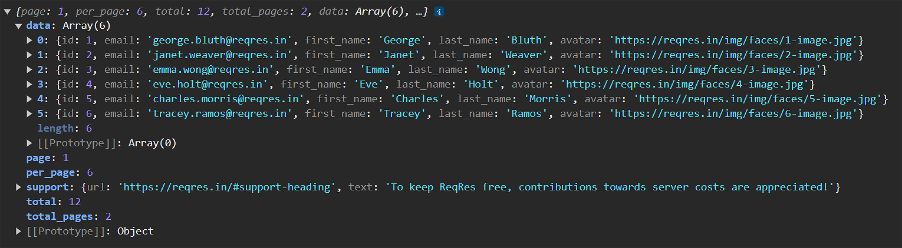

Learning Goals
At the end of this Tutorial, you will be able to:
- Send a request to a web server with the Fetch API.
- Work with the Promise object for chaining multiple requests.
- Work with the Response object.
- Handle server status codes.
The Fetch API: JS Code Snippets
The Fetch API
The Fetch API is a modern alternative to the older XMLHttpRequest API. You use the Fetch API to send HTTP requests to web servers and handle responses.
You need to supply only a single argument to the fetch() method: the URL of the data that you want to fetch. This URL is known as an endpoint. See below.
const response = fetch(url);The call to the requested resource by the fetch() method is asynchronous. That is, the time taken for the Fetch API to complete its task does not halt the execution of other instructions elsewhere in the web page.
Working with the Promise object
Before it returns a Response object, the fetch() method returns a Promise object that can have one of three possible properties:
pending |
The request's initial state. |
fulfilled |
The request has completed successfully and a value is returned. |
rejected |
The request has failed and a reason (error) is returned. |
A Promise is said to be settled or resolved if it is either fulfilled or rejected, but not pending. When a Promise is fulfilled, you can use its then() and catch() methods to handle it.
Using the Promise object enables multiple response functions to be chained togother. See the sample code below.
fetch(url)
.then(res => {
// handle the response
})
.catch(error => {
// handle any network connection error
});If the request completes successfully, the requested data is returned and wrapped inside a Response res object. This object has a number of useful properties and methods for working with the data from the server.
Working with sample data
Let's work with a an example of fetching the contents of a text file.
Start by creating an HTML file with as pair of script tags.
Paste the following server URIs with which you can use the fetch() method.
const URI_1 = "https://reqres.in/api/users";
const URI_2 = "https://reqres.in/api/users/2";
const_URI_3 = "https://jsonplaceholder.typicode.com/users";
const_URI_4 = "https://pokeapi.co/api/v2/eevee";
console.log(fetch(URI_1));In the DevTools Console, you can see the result of the call to the fetch() method is a Promise.

Next, let's examine the Response (res) object returned from the web server. Paste these new lines in your sample code.
fetch(URI_1)
.then(res => console.log(res));
The Console should look as follows:

The data from the server is not directly accessible from the res object. So you need to process the data using one of two methods:
.text() |
Use this when the Response object contains 'raw' or 'plain' text, or HTML-formatted text. |
.json() |
Use this when the Response object contains only data in JSON format. |
Both methods are also asynchronous.
Update your sample code as follows:
fetch(URI_1)
.then(res => res.json())
.then(data => console.log(data));
Your Console should look similar to the following:
Update your code to request data on a single user (with an id of 2) and view the result in your Console.
fetch(URI_2)
.then(res => res.json())
.then(data => console.log(data));
What would happen if you requested data on a non-existent user. For example, a user with an id of 99? Update your sample code as shown below.
fetch("https://reqres.in/api/users/99")
.then(res => res.json())
.then(data => console.log(data))
.catch(error => console.log(`Error: ${error}`));
Your Console should display the error below.

Note that the Console does not log the error statement. This is because the Fetch API only handles the network connection to the server. It does not handle the server's response, whether that response is a success or failure.
Update your sample code as follows and check your Console:
fetch("https://reqres.in/api/users/99")
.then(res => {
if (res.ok) {
console.log("Response success.")
res.json()
.then(data => console.log(data));
}
else {
console.log("Response error.");
}
})
.catch(error => console.log(`Error: ${error}`));
Finally, edit the id to 2 for a real user, reload the web page, and check your Console again.
Working with the Fetch API options
The fetch() method can take a second argument, an object that contains a number of options. The most common options are:
- method
- headers
- body
The METHOD options
By default, a fetch request uses the GET method. So this:
fetch("https://reqres.in/api/users/2")Is really this:
fetch("https://reqres.in/api/users/2",
{ method: "GET" }
)The four main values of METHOD are as follows:
| GET | Retrieves data for the specified resource. |
| POST | Submits data to create a new entity for the specified resource. |
| PUT | Updates the target resource with supplied data. |
| DELETE | Removes the specified resource. |
The headers options
By default, a fetch request does not specify or use any headers. Here are the two most common ones:
| Content-Type | Indicates the media type of the resource or data being from the client to the server. For example: 'Content-type': 'application/json' 'Content-type': 'application/text' |
| Accept | Specifies the media types that the client is willing to receive from the server. |
The body options
You will use the body property with methods like POST, PUT, and PATCH, where the request includes data to be sent from the client to the server.
| String | Plain text or a string of JSON, XML, etc. Useful for APIs that accept raw text or JSON string. |
| FormData | Useful for constructing a set of key/value pairs representing form fields and their values, which are sent in a request with: 'Content-Type': 'multipart/form-data' |
| Blob | Used to send binary data, such as images or files, in a request. |
Working wth a sample POST request
Let's add some sample code to create a fetch() request that sends data to the server.
fetch('https://reqres.in/api/users', {
method: 'POST',
headers: {
'Content-Type': 'application/json'
},
body: JSON.stringify({
name: 'User 1'
})
}).then(res => {
return res.json()
})
.then(data => console.log(data))
.catch(error => console.log('ERROR'))In this fetch request, the method JSON.stringify() takes the object { name: 'User 1' } and converts it into the JSON string {"name": "User 1"}, which is then assigned to the body property of the request. This string is what gets sent to the server as the payload of the POST request.
It's crucial to set the Content-Type header to 'application/json' as well, as this tells the server to expect JSON-formatted data. The server then knows how to parse the incoming string back into a JSON object on its end.
The async/await syntax
The Fetch API also provides an async/await syntax for writing asynchronous code. You may find this a better alternative to the promise chaining syntax.
Below is an example:
async function fetchUserData() {
try {
const response = await fetch("https://reqres.in/api/users/2");
if (response.ok) {
console.log("Response success.");
const data = await response.json();
console.log(data);
} else {
console.log("Response error.");
}
} catch (error) {
console.log(`Error: ${error}`);
}
}
fetchUserData();In this async function:
- await is used to wait for the fetch call to resolve to a response.
- Then it checks if the response was successful.
- If so, it waits for the .json() method to resolve to a JavaScript object, which it then logs to the console.
- If the response is not successful (e.g., if the status code of the response is outside the 200-299 range), it logs "Response error." Any network errors are caught in the catch block and logged as an error.
The async/await format is considered to be syntactic sugar, which is built on top of underlying promise chaining. In the async/await version, the flow of the code is linear and straightforward, which makes it easier to follow the logic and manage errors.
And here is the sample POST in async/await format:
async function createUser() {
try {
const response = await fetch('https://reqres.in/api/users', {
method: 'POST',
headers: {
'Content-Type': 'application/json'
},
body: JSON.stringify({
name: 'User 1'
})
});
if (!response.ok) {
throw new Error('Network response was not ok');
}
const data = await response.json();
console.log(data);
} catch (error) {
console.log('ERROR', error);
}
}
createUser();